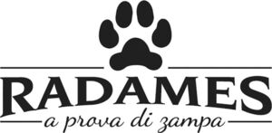

Trade Mark Journal No.2025/020 16 May 2025
WO0000001840909 (3,5,6,12,16,18,19,20,21,22,24,25,28,31)
Office of origin: Italy
Date of International Registration:11 November 2024
Date of designation in the UK:
11 November 2024

The trademark consists of an imprint depicting the wording RADAMES A PROVA DI ZAMPA in fancy characters, surmounted by two stylized segments between which there is the figure of a stylized animal pawprint and below said wording RADAMES there are two stylized segments between which there is the wording A PROVA DI ZAMPA in fancy characters.
International priority date claimed: 3 July 2024
(Italy)
(302024000107464)
- Class 3
- Pre-moistened or impregnated cleansing pads, tissues or wipes; deodorants for pets; bath preparations for animals; shampoos for pets [non-medicated grooming preparations]; litter tray cleaners incorporating a deodorizer; non-medicated cosmetics and toiletry preparations; non-medicated dentifrices; perfumery, essential oils; bleaching preparations and other substances for laundry use; cleaning, polishing and abrasive preparations.
- Class 5
- Wipes impregnated with disinfectants for hygiene purposes; sanitizing wipes; antibacterial wipes; dog washes [insecticides]; deodorizers for litter trays; pharmaceuticals, medical and veterinary preparations; sanitary preparations for medical purposes; dietetic food and substances adapted for medical or veterinary use, food for babies; dietary supplements for human beings and animals; plasters, materials for dressings; material for stopping teeth, dental wax; disinfectants; preparations for destroying vermin; fungicides, herbicides.
- Class 6
- Cat doors of metal; common metals and their alloys, ores; metal materials for building and construction; transportable buildings of metal; non-electric cables and wires of common metal; small items of metal hardware; metal containers for storage or transport; safes.
- Class 12
- Safety belts for vehicle seats; dog guards for use in vehicles; pet safety seats for use in vehicles; vehicles; apparatus for locomotion by land, air or water.
- Class 16
- Carrier bags of paper or plastic; trash can liners [trash or garbage bags]; general purpose plastic bags; plastic bags for pet waste disposal; paper and cardboard; printed matter; bookbinding material; photographs; stationery and office requisites, except furniture; adhesives for stationery or household purposes; drawing materials and materials for artists; paintbrushes; instructional and teaching materials; plastic sheets, films and bags for wrapping and packaging; printers' type, printing blocks.
- Class 18
- Bags for carrying animals; coats for dogs; dog parkas; dog collars and leads; clothing for dogs; raincoats for dogs; leather and imitations of leather; animal skins and hides; luggage and carrying bags; umbrellas and parasols; walking sticks; whips, harness and saddlery; collars, leashes and clothing for animals.
- Class 19
- Prefabricated houses, not of metal, for animals; materials, not of metal, for building and construction; rigid pipes, not of metal, for building; asphalt, pitch, tar and bitumen; transportable buildings, not of metal; monuments, not of metal.
- Class 20
- Scratching posts for cats; dog baskets; dog beds; pet crates; cat baskets; kennels for household pets; pet cushions; safety gates of metal for babies, children, and pets [furniture]; portable beds for pets; vats, not of metal; furniture, mirrors, picture frames; containers, not of metal, for storage or transport; unworked or semi-worked bone, horn, whalebone or mother-of-pearl; shells; meerschaum; yellow amber.
- Class 21
- Drinking bottles for sports; non-mechanized pet waterers in the nature of portable water and fluid dispensers for pets; pet feeding bowls; feeding and drinking bowls for pets; pet feeding bowls, automatic; thermally insulated containers for food or beverages; lockable household containers, not of metal, for food; household containers for storing pet food; electronic pet feeders; mangers for animals; animal-activated animal feeders; non-mechanized animal feeders; pet feeding bowls and pet drinking bowls; animal grooming gloves; litter boxes for pets; filters for use in cat litter boxes; dust-pans; lint brushes; brushes for pets; portable cool boxes, non-electric; household or kitchen utensils and containers; cookware and tableware, except forks, knives and spoons; combs and sponges; brushes, except paintbrushes; brush-making materials; articles for cleaning purposes; unworked or semi-worked glass, except building glass; glassware, porcelain and earthenware.
- Class 22
- Rope for use in pet toys; vehicle covers, not fitted; drop cloths of textile; ropes and string; nets; tents and tarpaulins; awnings of textile or synthetic materials; sails; sacks for the transport and storage of materials in bulk; padding, cushioning and stuffing materials, except of paper, cardboard, rubber or plastics; raw fibrous textile materials and substitutes therefor.
- Class 24
- Hand towels of textile; blankets for household pets; textiles and substitutes for textiles; household linen; curtains of textile or plastic.
- Class 25
- Neckerchiefs; neckwear; bandanas [neckerchiefs]; dickeys [shirt fronts]; clothing, footwear, headwear.
- Class 28
- Pet toys made of rope; toys for pets; inflatable swimming pools for recreational use [toys]; games, toys and playthings; video game apparatus; gymnastic and sporting articles; decorations for Christmas trees.
- Class 31
- Foodstuffs for farm animals; animal foodstuffs for the weaning of animals; bran mash for animal consumption; dog food; dog biscuits; foodstuffs for dogs; dog treats, edible; canned foodstuffs for dogs; edible chewing bones for dogs; edible chews for dogs; dog foods in the form of chews; litter peat; aromatic sand [litter] for pets; raw and unprocessed agricultural, aquacultural, horticultural and forestry products; raw and unprocessed grains and seeds; fresh fruits and vegetables, fresh herbs; natural plants and flowers; bulbs, seedlings and seeds for planting; live animals; foodstuffs and beverages for animals; malt.
EUROSPIN ITALIA S.P.A.
Representative: Dr. Modiano & Associati SpA, Via Meravigli 16, I-20123 Milano, ITALY